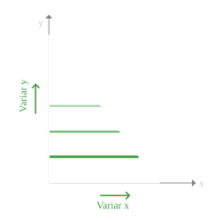

O Teorema de Fubini nos permite escolher entre duas ordens de integração para a mesma região:
\[ \iint_D f(x,y)\,dA = \int_a^b \int_{g_1(x)}^{g_2(x)} f(x,y)\,dy\,dx \]
\[ = \int_c^d \int_{h_1(y)}^{h_2(y)} f(x,y)\,dx\,dy \]
A escolha da ordem pode simplificar consideravelmente o cálculo, especialmente quando:
Os triângulos são formas fundamentais na engenharia espacial:
Para integrar sobre um triângulo, precisamos:
Diferentes ordens de integração podem ter diferentes complexidades de cálculo.
Problema: Calcular a integral de uma função \(f(x,y)\) sobre o triângulo \(T\) com vértices (0,0), (1,0) e (0,2).
Equações das retas:
Desafio: Determinar os limites de integração nas duas ordens possíveis.

Para cada \(x\) fixo entre 0 e 1:
\[ \int_0^1 \int_0^{2(1-x)} f(x,y) \, dy \, dx \]

Para cada \(y\) fixo entre 0 e 2:
\[ \int_0^2 \int_0^{1-\frac{y}{2}} f(x,y) \, dx \, dy \]

Veja animações das duas ordens de integração sobre o triângulo:
Compare visualmente como dy dx (varre verticalmente) e dx dy (varre horizontalmente) calculam a mesma região.
Fatores a considerar:
Estratégias práticas:
A experiência na avaliação de integrais o ajudará a desenvolver intuição para escolher a ordem mais vantajosa.
Problema: Calcular a área do triângulo com vértices (0,0), (1,0) e (0,2).
Neste caso, a função integranda é \(f(x,y) = 1\), pois a integral dupla de 1 sobre uma região representa sua área.
Ordem vertical primeiro:
\[ A = \iint_T 1 \, dA = \int_0^1 \int_0^{2(1-x)} 1 \, dy \, dx \]
Etapa 1: Resolver a integral interna em \(y\):
\[ \int_0^{2(1-x)} 1 \, dy = y \big|_0^{2(1-x)} = 2(1-x) \]
Etapa 2: Resolver a integral externa em \(x\):
\[ \int_0^1 2(1-x) \, dx = 2 \int_0^1 (1-x) \, dx = 2[x - \frac{x^2}{2}]_0^1 = 2(1 - \frac{1}{2}) = 1 \]
Resultado: A área do triângulo é 1 unidade quadrada.
Ordem horizontal primeiro:
\[ A = \iint_T 1 \, dA = \int_0^2 \int_0^{1-\frac{y}{2}} 1 \, dx \, dy \]
Etapa 1: Resolver a integral interna em \(x\):
\[ \int_0^{1-\frac{y}{2}} 1 \, dx = x \big|_0^{1-\frac{y}{2}} = 1-\frac{y}{2} \]
Etapa 2: Resolver a integral externa em \(y\):
\[ \int_0^2 (1-\frac{y}{2}) \, dy = \int_0^2 1 \, dy - \frac{1}{2}\int_0^2 y \, dy = 2 - \frac{1}{2}[y^2/2]_0^2 = 2 - \frac{1}{2} \cdot 2 = 1 \]
Resultado: A área do triângulo é 1 unidade quadrada.
Observação: Ambas as ordens produziram o mesmo resultado, como esperado.